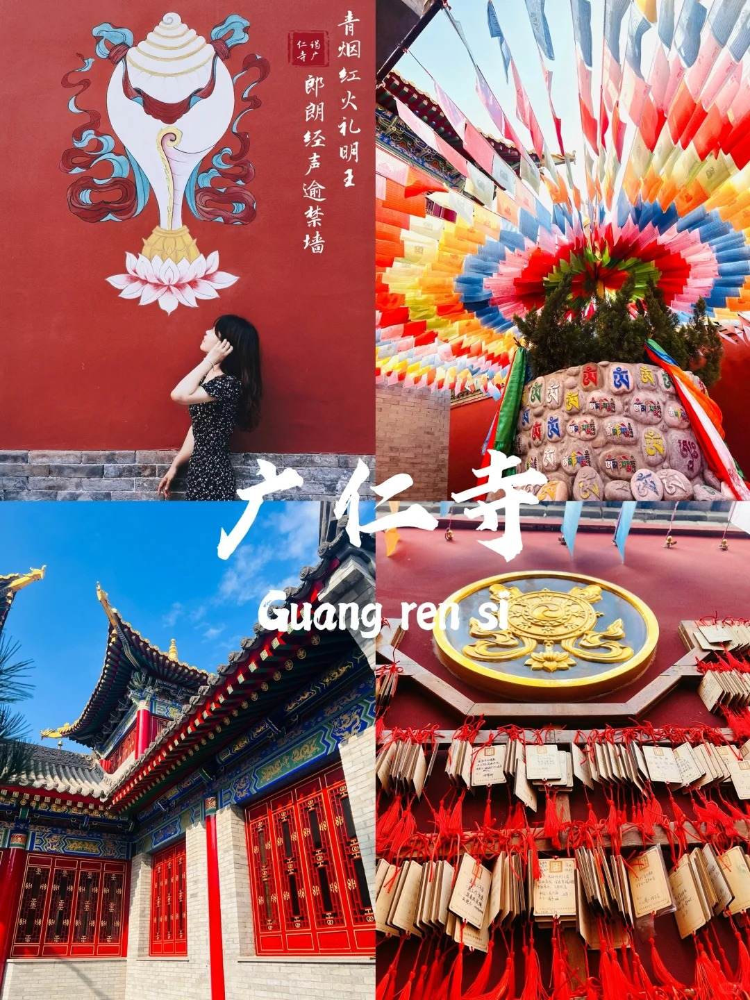

西安¶
西安是一个四季分明的城市，在9-11月份期间步入深秋，树叶都染上金黄色。
交通¶
机场：咸阳机场
票价记录（往返9月30日-10月4日）
| 日期 | 平台 | 航空公司 | 价格 |
|---|---|---|---|
| 9月20日 | 携程旅行 | 海南航空 | 1090 元 |
| 9月22日 | 美团 | xx航空 | 1440 元 |
| 9月23日 | 携程旅行 | xx航空 | 1400 元 |
| 9月24日 | 美团 | 海南航空 | 1390 元 |
| 9月25日 | 美团 | 南方航空 | 1500 元 |
| 9月26日 | 美团 | 东方航空 | 1370 元 |
| 9月26日 | 美团 | 东方航空 | 1700 元 |
行李¶
-
证件
- 身份证 * 2
- 机票 * 2
-
交通卡
- 西安地铁
-
洗浴
- 一次性毛巾
- 一次性四件套
-
衣物（气温较低）
- 外套
-
电子产品
- MacBook Air
- Ipad
- 充电宝 * 1
门票¶
- 一定要用美团！！（小程序也是跳转美团，我用小程序3天都没抢到，美团一次成功）
- 首先在抢票之前在美团app中提前找一个免费的博物馆提前填好身份信息（很重要）
- 每天10，11，18，19整点放票，提前三天预约，比如1号能预约3号的
- 以上午10点为例，一定要提前3~5分钟进入界面，就是，10点一到千万不要着急点或者返回重新进，等到01分来回切日期查看余票，当看到显示余票后，再速度点你需要选择的日期和时间段，接着选中几张和预约人员信息，选中后不要提交！停留到此页面不要动！！如图2（因为直 接提交大概率抢不到或者直接卡退出去）
- 保留美团此页面不要退出！！保留美团此页面不要退出！！保留美团此页面不要退出！！重要的话说三遍，不要后台，一小时后，11点01（注意不要准点抢，一定要11:00:30后）提交预约人员信息，丝滑到手
妆造¶
推荐下午做，大概要1-2个小时
不推荐待在太热的环境
细节
-
妆造一定要问，都有哪些套餐和优惠（因为你自己讲的可能都在人家套餐里，可能套餐更便宜)，问完了之后再选择，都有哪些衣服，可以随便试么，都可以试么？（有些家不是每个衣服都包括在内)
-
试之前要问这些衣服要注意什么么？都哪里容易坏，一定要认真检查，（有的不注意坏了，是要赔偿的)
-
化妆也很重要的，你一定要表达清楚想要什么样的，也要问清楚价格，因为有化妆单算的
-
关于修底片，其实，很多好的创意和技术，真的不需要精修，一般店都会把底片给你的，但是也有超过多少另收钱的
-
真的不是越贵越好，很多10元5张的，比300，2张的都好！7天胖了10斤，6个博物馆，6个演出，7个寺庙，我做了43页攻略为了这7天
推荐¶
1. 小吃¶
1.1 肉夹馍¶
推荐腊汁和牛羊肉
小寨和大雁塔附近选择子午路张记的子午路店和翠华路店
吉祥村住选择东关吉祥
钟楼附近选择秦豫肉夹馍
大唐西市选择刘嫂
1.2 泡馍¶
回坊街区：广济街老刘家，果渊斋老米家，红阜街马洪，一真楼，建娃，铁老十，刘信等
1.3 凉皮¶
凉皮是个统称，具体分为米皮，农家面皮，麻酱酿皮，岐山擀面皮，扶风烙面皮等等。西安本地是产前三种
1.3.1 米皮¶
永宁门就吃薛昌利
钟楼的朱选民
黄雁村选择翔子米皮
魏家凉皮属于凑活能吃
1.3.2 面皮¶
农家面皮去钟楼选择袁家村或是白鹿原小吃集
1.3.3 麻将酿皮¶
麻酱面皮去回坊吃志亮蒸饺家，带回家可以选择盛志望
1.4 面¶
1.4.1 油泼面¶
钟楼可以选择尚寨
南门选择芳玲面馆
大唐不夜城选择大秦面庄
夜市很多场子可以选择干拌面，汇通面，剁椒面，双椒捞鸡面，大盘鸡拌面，炒面等。其他菠菜面，岐山臊子面，杨凌蘸水面，摆汤面，炒拉条种类太多
1.x 煎饼果子¶
大学南路东口 小吃摊
五天四晚¶
DAY1 钟鼓楼¶
图片

-
介绍
大皮院
小吃：一真楼泡馍、贾五油湖璇油炸牛肉饼、油茶麻花、石家包子、铁权牛肉丸
回民街
🥪早市
高家大院
💕特色：皮影戏（10分钟）、华阴老腔
现场购买门票，在大宅院里面演出节目，据说排队的人很多地方很小很挤
钟鼓楼（15：00-18:00）
🚴♂️路线：鼓楼➡开元商场➡钟楼
早上9:30、10:15、11:00、11:45都有编钟表演 晚上有灯光 不建议登钟楼，可以在对面开元商场5、6/楼露天观景台上合影拍照 可以登鼓楼？
钟楼小区
💕特色：本地人推荐的美食街；午市
西安城墙（14：30-16：30）
⌚步行时间：约20分钟
🚴♂️路线：含光门➡勿幕门➡朱雀门➡永宁门
💕特色：9:00迎宾开城仪式、其他时间段有表演节目
城墙上挺晒的，非必要可以不上去； 开城门仪式很震撼，考虑买开城门仪式表演的票看表演
洒金桥
⌚开放时间：6：30-10：30
💕特色：小吃街
评价说较为脏乱差，整体不如回民街
图片
 红墙，很出片 广仁寺（9:00-11：30）
{kind=link}
预算
门票：(54 + 30 + 30 ) * 2 = 216 元
DAY2 大唐不夜城¶
{kind=link}
{kind=link}
-
介绍
东仓门早市
有烟火气的菜市场，蔬果比较便宜
时间：上午，9点结束
小吃：马革委肉丁胡辣汤：河南风味胡辣汤;甑糕;牛肉粉条水煎包
陕西历史博物馆
⌚游览时间：1~3h 左右
提前34天预约
考古博物馆的值得去
大雁塔
很出片
广场上有音乐喷泉表演，8点结束 大唐不夜城可以租汉服拍照打卡，要货比多家；早一点去晚上八点以后就没有表演了，个人觉得不看表演只是逛的话有点单调。
大唐不夜城
下午有节目
预算（120 + 25） * 2 = 290 元
DAY3 兵马俑&长恨歌¶
图片
{kind=link}
-
介绍
出发准备
上午10点钟楼地铁站出发（能提前到9点更好），11点到达秦陵西站，A口出站后花10块左右打车到【丽山园游客中心】
两人以上的不推荐下地铁后坐公交，公交5/人，还容易被推销不正规讲解花冤枉钱。
丽山园
入园后，在门口买摆渡车票（15/张），不买的话要走十几公里，而且中间无法补票只能在大门口买。建议坐摆渡车最后一排，方便欣赏沿途风景
丽山园很大，摆渡车一共停3个点，前两个是陪葬坑，可看性高，最后一个是秦始皇陵墓（暂未开发），可略过不下车，直接坐到终点，下车的话得自己走回终点。
出丽山园后，直接坐免费的摆渡车到兵马俑景区。
兵马俑
兵马俑下午4点闭关，优先去1号坑，一定要有讲解！！
官方的讲解在一号坑入口的左手边，只能付现，人多的话可能很难约。另外也可以选择在第二道安检后旁边的讲解，1-5人90R，需要另付耳机8/人。我们两个拼了一对情侣，平均每人30.5R。
逛完3个坑大概1个小时，如果想慢点逛建议提前跟讲解沟通。
【盖章和纪念品】 二号坑出来左边有个官方文创店，门口有免费章（但印泥不够盖出来不好看），店内任意消费可以盖普通章（很一般，可以考虑去主题邮局盖），买特定的文创可盖特定的章。 出口不远处有【兵马俑主题邮局】，门口有免费的彩色印章，店内有两个主题邮戳（如图6）。 ❗️重点，建议来之前从钟楼邮政支局买一套五张的兵马俑邮资明信片，才5.5/套，超级划算，而且设计的也很好看（如图4）！景区里都是5/张！
【返回市区】 结束后，如果不想走那条1.5公里的商业街出去，可以直接右转，直走再右转看到一个“秦味吉客农家饭”的牌子在这里就可以打车了，如果找不到这个定位，也可以定秦俑派出所东侧。 全程大概5分钟，比走商业街出去快很多！！！建议打到华清池的上一站【东三岔】，这样上地铁能有座位。
长恨歌-华清宫-骊山
建议只购买长恨歌门票
华清宫不听讲解的话只能看到3个团团，没什么看头
骊山上有索道缆车可以体验下，其他的没什么出彩的
预算（120 + 120 +268） * 2 = 508 元
DAY4¶
图片
{kind=link}
-
介绍
广仁寺外面的红墙配合秋景很适合出片、进去可以免费请3柱香
DAY5¶
- 购买伴手礼或特产？
-
介绍
未竟¶
美食¶
-
特色美食
1. 石炉火锅 2. 肉夹馍 3. 牛羊肉泡馍 4. 油泼面 5. 油炸牛肉饼 6. 凉皮 7. 胡辣汤 -
饮品
- 冰峰（汽水）
- 茶话弄
酒店¶
永宁门站附近，步行可去钟鼓楼、回民街、洒金桥、城墙，附近还有地铁
小寨附近临近大雁塔广场、赛格购物中心、大悦城、陕西博物馆、大唐不夜城
189
| 日期 | 平台 | 酒店 | 价格 | 规格 |
|---|---|---|---|---|
| 10月1日 | 美团 | 海友酒店 | 500+ 元 | 双人大床房 |
特产¶
-
小吃
📍选购场所：钟楼小区、瑞丰食品城
🛒清单： 1. 锅巴 2.
-
伴手礼
📍选购场所：
🛒清单： 1. 兵马俑 2. 肉夹馍